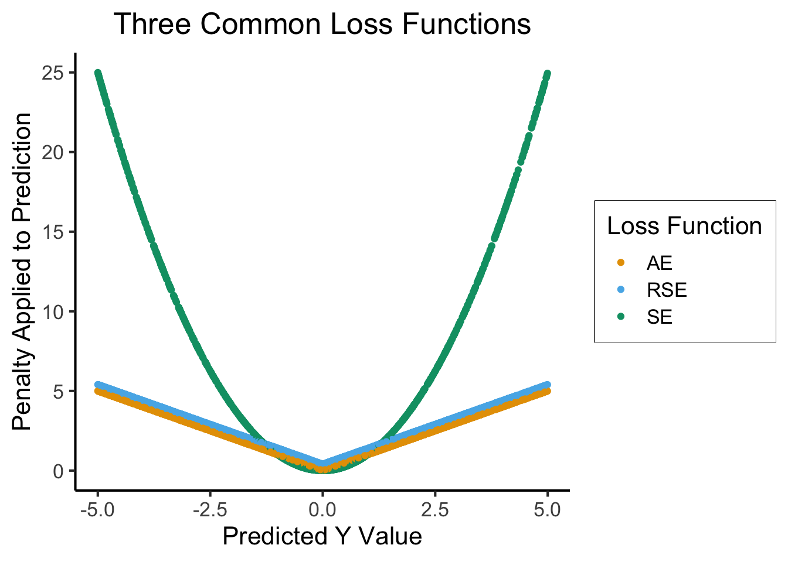
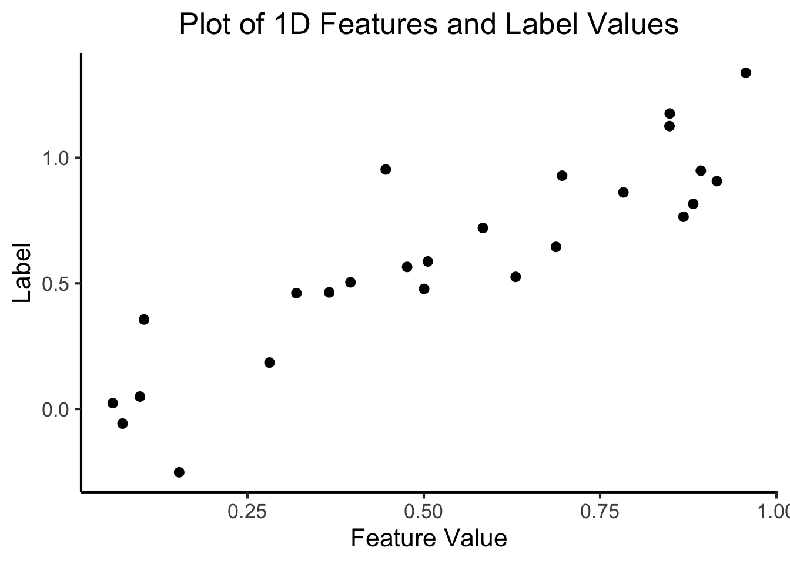
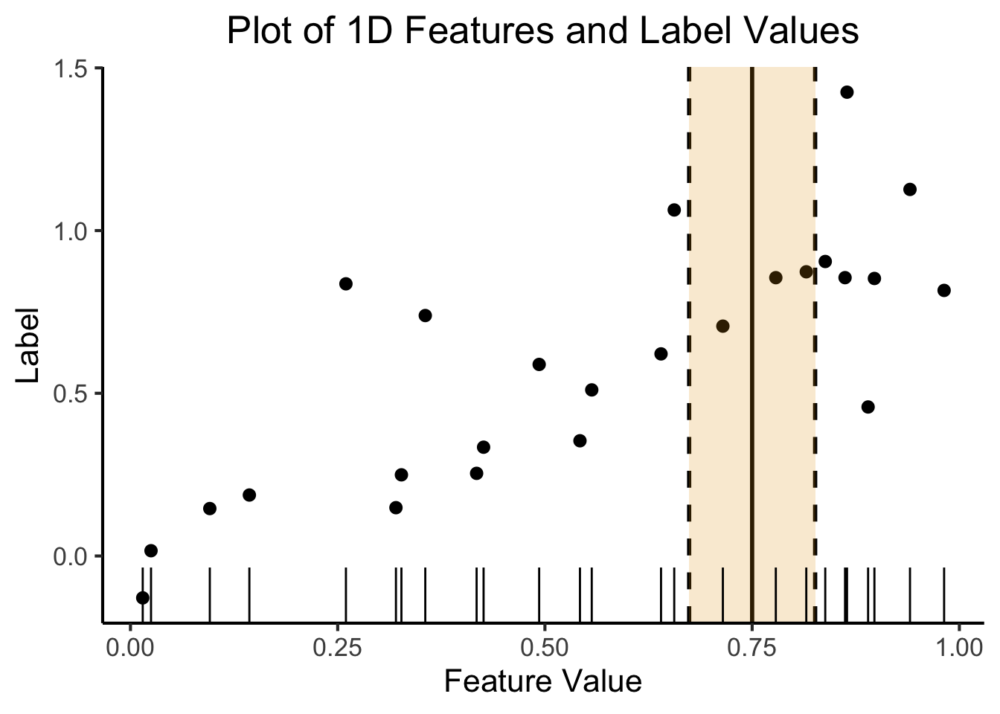
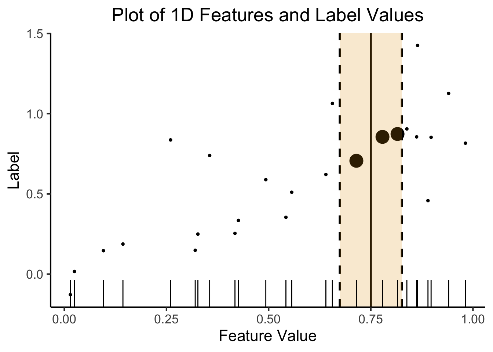

cb_palette = ["#E69F00", "#56B4E9", "#009E73", "#F0E442", "#0072B2", "#D55E00", "#CC79A7"]
from IPython.display import Markdown
def disp(df, floatfmt='g', include_index=True):
return Markdown(
df.to_markdown(
floatfmt=floatfmt,
index=include_index
)
)
def summary_to_df(summary_obj, corner_col = ''):
reg_df = pd.DataFrame(summary_obj.tables[1].data)
reg_df.columns = reg_df.iloc[0]
reg_df = reg_df.iloc[1:].copy()
# Save index col
index_col = reg_df['']
# Drop for now, so it's all numeric
reg_df.drop(columns=[''], inplace=True)
reg_df = reg_df.apply(pd.to_numeric)
my_round = lambda x: round(x, 2)
reg_df = reg_df.apply(my_round)
numeric_cols = reg_df.columns
# Add index col back in
reg_df.insert(loc=0, column=corner_col, value=index_col)
# Sigh. Have to escape | characters?
reg_df.columns = [c.replace("|","\|") for c in reg_df.columns]
return reg_dfMidterm Prep Practice Problems
Extra Writeups
source("../../_globals.r")
Update Log
- 2023-10-16, 12:30am EST: Added overview of KNN Applied to Classification, with example code that you can use to test your understanding and create your own practice problems üòâ
- 2023-10-15, 11:30pm EST: Added practice problems on Overfitting
- 2023-10-15, 11pm EST: Added review material and practice problems on Loss Functions
- 2023-10-15, 9:30pm EST: Added overviews/review material for Precision, Recall, F1 Score, and Confusion Matrices, along with practice multiple choice problems on interpreting confusion matrices.
- 2023-10-15, 8:30pm EST: Added example multiple choice problems on Distance Metrics
- 2023-10-15, 8pm EST: Added example essay question on Classification vs. Regression, and how to transform from one to the other
- 2023-10-15, 7pm EST: Added example multiple choice and essay questions on EDA
- 2023-10-15, 6pm EST: Added R and Python code demonstrating Wide vs. Long Datasets and how to transform data between these two formats
- 2023-10-15, 5pm EST: Added overviews and practice problems on Conda, Typecasting
- 2023-10-14, 11pm EST: Added overview of object-oriented programming in Python, along with a practice problem on this topic.
- 2023-10-14, 10pm EST: Initial version of document, emailed out in announcement to students.
This writeup is organized so that each section represents a particular topic/subtopic that the exam may cover, such that the example problems within each topic/subtopic will prepare you for questions on that topic/subtopic which may appear on the midterm!
Data Science Fundamentals
Filepaths
For these practice problems, assume we have a directory structure on our computer that looks as follows, and that this is the entire directory structure (that is, there are no additional files or folders on the computer that are not displayed in the diagram).
The way this diagram works is:
- The names of folders are bolded, and if a folder
Xis contained within a folderY, then the diagram has an arrow between folderXand folderY.- So, for example, since the Users folder here is a subfolder of the / folder (the root folder), there is an arrow pointing from the box with label / to the box with label Users.
- If a file
fis contained within a folder, then the file is displayed as a box within the box representing the folder.- So, for example, since the document
doc1.qmdis contained within the folder labeledjpj, there is a smaller box labeleddoc1.qmdwithin the box labeledjpj.
- So, for example, since the document
Please answer the following questions, with reference to this directory structure:
True or False: If I am writing the document
doc1.qmd, and I want to include the imagejeffImage.jpegfrom within the same folder, I can use the relative pathjeffImage.jpeg, like
Solution (Click to expand)
True: Since jeffImage.jpeg is in the same directory as the .qmd file we’re authoring, we can reference it using a relative path to the file which is actually just the name of the file (since the Quarto compiler doesn’t need to navigate to any other folder to retrieve the file).
True or False: If I am writing the document
doc1.qmd, and I want to include the imagejeffImage.jpegfrom within the same folder, I can use the absolute path/Users/jpj/jeffImage.jpeg, like
Solution (Click to expand)
True: In this case, it actually doesn’t matter where the .qmd file we’re authoring exists on the filesystem, since we’re using an absolute path. This means that, no matter where the .qmd file is, the Quarto compiler will be able to find the image file, by starting at the root directory /, navigating to the Users subdirectory, then the jpj subdirectory, and finally locating the jeffImage.jpeg file within this jpj subdirectory.
True or False: If I am writing the document
doc1.qmd, and I want to include the imagejeffImage.jpegfrom within the same folder, I can use the relative pathimages/jeffImage.jpeg, like
Solution (Click to expand)
False: In this case, the Quarto compiler will crash with an error. It will attempt to look for an images subdirectory within the directory where the .qmd file is located, and it will not find a subdirectory called images (since there are no subdirectories within the jpj folder), producing an error.
HTTP
Please match each of the following HTTP codes on the left to their meanings on the right (that is, what it means if we receive that code as a response to our call to the server):
| HTTP Code | |
|---|---|
| 1 | 200 |
| 2 | 301 |
| 3 | 403 |
| 3 | 404 |
| 4 | 500 |
| Meaning | |
|---|---|
| A | Error: the server software could not find the requested file or data |
| B | Successful request (the body of the request should thus contain the html code, or json data, or whatever else was requested) |
| C | Server error: the server software crashed or experienced an error while trying to respond to the request |
| D | Not authorized: the requested file is protected by a password that was not given correctly, for example, or it is restricted only to logged-in users and the user making the request was not logged in. |
| E | Redirect: A response with this code indicates that the server is going to redirect the user to a different page within the website, or a different website entirely. |
Solution (Click to expand)
- B. 200 is the HTTP code for a successful request
- E. 301 is the HTTP code for a redirect
- D. 403 is the HTTP code for a non-authorized request
- A. 404 is the HTTP code for file not found
- C. 500 is the HTTP code for an unknown/unspecified server error
Git/GitHub
[From Week 04 Slides] Please match each of the following git commands with the description of what it does:
| Command | |
|---|---|
| 1 | git clone |
| 2 | git init |
| 3 | git add |
| 4 | git reset |
| 5 | git status |
| 6 | git commit -m "message" |
| 7 | git push |
| 8 | git pull |
| 9 | git merge |
| Description | |
|---|---|
| A | Downloads a repo from the web to our local computer |
| B | Merges remote versions of files with local versions |
| C | Creates a new, blank Git repository on our local computer (configuration/change-tracking stored in .git subfolder) |
| D | Shows currently staged files and their status (created, modified, deleted) |
| E | “Saves” the current version of all staged files, ready to be pushed to a backup dir or remote server like GitHub |
| F | Transmits local commits to remote server |
| G | Stages a file(s): Git will now track changes in this file(s) |
| H | Downloads commits from remote server to local computer |
| I | Undoes a git add |
Solution (Click to expand)
- A: The
git clonecommand downloads a repo from the web to our local computer - C: The
git addcommand creates a new, blank Git repository on our local computer (configuration/change-tracking stored in.gitsubfolder) - G: The
git addcommand stages files; Git will now track changes in these files - I: The
git resetcommand undoes a previousgit addcommand - D: The
git statuscommand shows currently staged files and their status (created, modified, deleted) - E: The
git commitcommand “saves” the current version of all staged files, ready to be pushed to a backup dir or remote server like GitHub - F: The
git pushcommand transmits local commits to remote server - H: The
git pullcommand downloads commits from remote server to local computer - B: The
git mergecommand merges remote versions of files with local versions
Python: Object-Oriented Programming (Overview)
We didn’t get to talk about this much in class, so here I will give a quick overview and then a practice problem afterwards.
The way that Object-Oriented Programming is implemented in Python is as follows:
Python provides you with a set of “default” object types: starting from the base object class, for example, it provides classes like int, float, string, boolean, and so on.
However, sometimes these base classes on their own, or combinations of them, cannot serve the purposes that you need for your particular project/application. In these cases, you can create your own custom classes, with syntax that looks like the following
(NOTE: Despite the fact that we’re not explicitly defining Vehicle here to be a sub-class of any other class, by default in Python all classes are subclasses of the object class mentioned above)
class Vehicle:
def __init__(self, maker, num_wheels):
self.maker = maker
self.num_wheels = num_wheelsBy defining the class using the line class Vehicle at the top, and then defining a constructor function called __init__(), we can now create new objects with the type Vehicle by using syntax like the following:
my_vehicle = Vehicle("Toyota", 4)Which will call the __init__() function defined above, such that now the value "Toyota" will be stored in the instance variable called maker within the my_car object, and the value 4 will be stored in the instance variable called num_wheels within the my_obj object. The object my_obj here is therefore an instance of the class Vehicle.
This means that, from this point onwards, we can access this information (the values contained in maker and num_wheels) using the dot operator . on the object, like:
print(my_vehicle.maker, my_vehicle.num_wheels)Toyota 4Now that we’ve seen how to define a class, providing a template for creating objects, and how to create objects using the constructor function within a class, let’s now look at the notion of inheritance.
An issue with OOP in Python (unlike many other languages) is that Python does not allow you to create multiple versions of the same function within the same class.
This means, for example, that we could not add a start_vehicle() function to our Vehicle class which would behave differently given different input types. The following new version of Vehicle will produce an error:
class Vehicle:
def __init__(self, maker, num_wheels):
self.maker = maker
self.num_wheels = num_wheels
def start_vehicle(self):
"""
Version for cars
"""
# Start the car
def start_vehicle(self):
"""
Version for motorcycles
"""
# Start the motorcycleSo, if we find ourselves in a case where we want to model a hierarchy of more-general to more-specific versions of a class, we can use inheritance to define sub-classes of a given class which represent a more specific “version” of this class.
So, using our Vehicle class as our working example, we may find ourselves defining four-wheeled vehicles very often, since cars are common vehicles which always have four wheels, but also two-wheeled vehicles very often, since motorcycles are common vehicles which always have two wheels.
So, to make our lives easier, rather than having to specify the number of wheels each time we want to create an object representing a car or motorcycle, instead we can create sub-classes of Vehicle representing cars and motorcycles, as follows:
class Car(Vehicle):
def __init__(self, maker):
super().__init__(maker, 4)
class Motorcycle(Vehicle):
def __init__(self, maker):
super().__init__(maker, 2)Now that we have these two sub-classes, defined in this way, we can create Car and Motorcycle objects, which will have those types (Car and Motorcycle, respectively) but will also both have type Vehicle, and will have their num_wheels value set automatically, without us having to provide these values explicitly to the Car and/or Motorcycle constructors:
my_car = Car("Toyota")
my_motorcycle = Motorcycle("Kawasaki")And now, despite the fact that my_car and my_motorcycle are of different sub-types, since they are both objects of type Vehicle we know that we can access a field called num_wheels on both:
print(my_car.num_wheels, my_motorcycle.num_wheels)4 2So, we can see from this output that num_wheels has been set correctly, automatically, despite the fact that we did not explicitly specify the values 4 or 2 when creating our my_car and my_motorcycle objects above.
Python: Object-Oriented Programming (Practice Problem)
Given the above overview, hopefully the following practice problem becomes more manageable!
Fill in the blanks to make the statement correct, by choosing the correct answer from each dropdown menu:
Defining a in Python (which should include a constructor function with the name ), allows us to create objects, each of which is of the class.
Solution (Click to expand)
Defining a class in Python (which should include a constructor function with the name __init__()), allows us to create objects, each of which is an instance of the class.
Conda
(Material from Week-02 course notes)
Please match each of the conda commands on the left with their corresponding descriptions on the right:
| Command | |
|---|---|
| 1 | conda deactivate |
| 2 | conda activate myenv |
| 3 | conda info --envs |
| 4 | conda remove --name myenv --all |
| 5 | conda rename -n old_name new_name |
| Description | |
|---|---|
| A | Remove an environment named “myenv” |
| B | Deactivate current environment |
| C | Rename an environment |
| D | List all environments |
| E | Activate an environment named myenv |
Solution (Click to expand)
- B: The
conda deactivatecommand deactivates the current environment. - E: The
conda activate myenvcommand activates an environment namedmyenv - D: The
conda info --envscommand lists all environments - A: The command
conda remove --name myenv --allremoves an environment namedmyenv - C: The command
conda rename -n old_name new_namerenames the environment namedold_nameto be namednew_name
Typecasting: Overview
The concept of typecasting is one we didn’t get to discuss much in class, but it’s an operation that we use all the time when writing Python code: for example, every time we print the value of an int or float variable, we are implicitly typecasting the int or float to a string variable, as in the following example:
one_plus_one = 1 + 1
print(f"One plus one is {one_plus_one}")One plus one is 2A crucial concern with typecasting (the main reason we worry about it as data scientists) is that we need to ensure that the information we want to retain is indeed retained when we perform a typecasting operation, whether implicitly or explicitly.
For example, if we make a variable called my_pi which we’re hoping to use to represent \(\pi\) to the maximum precision possible (e.g. for computing areas of circles), then we need to make sure that we never typecast its value to a numeric type like int that cannot represent the decimal precision necessary for using \(\pi\):
import math
my_pi = math.pi
print(my_pi)3.141592653589793my_pi = int(my_pi)
print(my_pi)3This may seem like a silly example, since for values like my_pi we would usually be aware and careful about loss of precision, but it can become more and more easy to make these types of mistakes—where typecasting leads to a loss of information—when you are working with a large collection of numeric variables.
More formally, we can say that information is lost when typecasting a variable x into some other type to produce a new variable y if it would not be possible to recover the information contained in x from the new variable y. So, given this definition,
my_int = 3
my_str = str(my_int)Would not be a case where information is lost, since we could always recover the original my_int by typecasting back to the int type;
my_new_int = int(my_str)
print(my_new_int, my_int)3 3my_new_int == my_intTrueHowever, in the following code block
my_float = 3.14
my_int = int(my_float)We have performed a typecasting operation which has resulted in a loss of information, since unlike in the previous example, we are unable to re-create the original my_float value by typecasting my_int back to the float type:
my_new_float = float(my_int)
print(my_float, my_new_float)3.14 3.0my_float == my_new_floatFalseTypecasting: Practice Problem
- Assume we have just created a variable
my_floatusing the linemy_float = 3.14. Which of the following Python expressions represents a typecasting operation where information is lost?my_int = int(my_float)my_str = str(my_float)my_float2 = float(my_float)my_float3 = np.float64(my_float)
Solution (Click to expand)
The correct answer is a: When we convert from the float type to the int type, the decimal information from the float is lost, since the resulting int will contain only the non-decimal information from the float. So, for example, int(3.14) produces the int value 3, int(-10.001) produces the int value -10, and so on.
Steps in the Data Science Pipeline
Data Cleaning: Overview
When talking about tabular datasets (as in, datasets which can be represented as tables, and hence as DataFrames in Pandas or tibbles in Tidyverse), we call a dataset:
- Long if the dataset contains multiple rows for each unit of observation in the data, and
- Wide if the dataset only contains one row for each unit of observation in the data.
For example, if the unit of observation is a country, then the following dataset is in long format, since it contains two rows for each country:
Code
library(tidyverse)
long_df <- table2 |> filter(
year == 2000
) |> select(
country, type, count
) |> rename(
variable = type,
value = count
)
long_df |> write_csv("assets/long_df.csv")
long_df| country | variable | value |
|---|---|---|
| Afghanistan | cases | 2666 |
| Afghanistan | population | 20595360 |
| Brazil | cases | 80488 |
| Brazil | population | 174504898 |
| China | cases | 213766 |
| China | population | 1280428583 |
On the other hand, the following dataset (with the same unit of observation) is in wide format, since each country’s information is contained in one and only one row.
wide_df <- table1 |> filter(
year == 2000
) |> select(
country, cases, population
)
wide_df |> write_csv("assets/wide_df.csv")
wide_df| country | cases | population |
|---|---|---|
| Afghanistan | 2666 | 20595360 |
| Brazil | 80488 | 174504898 |
| China | 213766 | 1280428583 |
We can use the Pandas function pd.melt(), however, to convert this second dataset from wide to long format, so it matches the format of the first dataset, as follows:
import pandas as pd
wide_df = pd.read_csv("assets/wide_df.csv")
long_df = pd.melt(
wide_df,
id_vars=['country'],
value_vars=['cases','population']
)
disp(long_df)| country | variable | value | |
|---|---|---|---|
| 0 | Afghanistan | cases | 2666 |
| 1 | Brazil | cases | 80488 |
| 2 | China | cases | 213766 |
| 3 | Afghanistan | population | 20595360 |
| 4 | Brazil | population | 174504898 |
| 5 | China | population | 1280428583 |
Data Cleaning: Practice Problems
Consider the following dataset, where the unit of observation is a person on a mailing list:
id name email ip_address 0 Jimmy Fishburn jfishburn0@ask.com 10.14.177.175 1 Chadwick Arrowsmith carrowsmith1@photobucket.com 186.209.191.254 2 Antony Hartington ahartington2@constantcontact.com 200.241.210.61 Is this dataset in long or wide format?
Solution (Click to expand)
This dataset is in wide format, since the unit of observation is a person, and each person is represented as a single row in the dataset, so that each column corresponds to a property of a single person.
Consider the following dataset, where the unit of observation is again a person on mailing list:
id variable value 0 name Jimmy Fishburn 0 email jfishburn0@ask.com0 ip_address 10.14.177.1751 name Chadwick Arrowsmith 1 email carrowsmith1@photobucket.com1 ip_address 186.209.191.2542 name Antony Hartington 2 email ahartington2@constantcontact.com2 ip_address 200.241.210.61 Is this dataset in long or wide format?
Solution (Click to expand)
This dataset is in long format, since the unit of observation is a person, but the information we have about each person is spread over three rows.
- What Pandas function could we use to transform the dataset from the first problem (the wide-format dataset) into the dataset from the previous problem (the long-format dataset)?
pd.sort_values()pd.melt()pd.to_numeric()pd.unique()
Solution (Click to expand)
The correct answer is a: pd.melt() is the function we use to transform wide-format datasets into long-format datasets, where we supply this function with an id_vars parameter telling it the column which uniquely identifies the unit of observation in the dataset.
NOTE: For more details on the syntax of pd.melt() and other functions used for transforming data, please see my writeup on pd.melt() and pd.pivot() here.
EDA
Exploratory Data Analysis or “EDA” is a broad term, describing what is essentially a toolkit of methods you can use to start to get an understanding of your data before you begin developing and testing hypotheses. Given this, on the midterm you may encounter questions about EDA like:
- Multiple-choice questions asking you whether a given technique would be considered an EDA or CDA (Confirmatory Data Analysis) step,
- An essay question asking you to describe a few different examples of EDA techniques,
- An essay question asking you to describe a single EDA technique in-depth, or
- An essay question asking you to describe the differences between Exploratory Data Analysis and Confirmatory Data Analysis.
An example multiple choice question would be one like the following question:
- Which of the following techniques would not be considered part of the Exploratory Data Analysis (EDA) process:
- Outlier Detection
- Data Transformation
- Hypothesis Testing
- Bivariate Analysis (Bivariate Plots and Cross-Tabulations)
Solution (Click to expand)
The correct answer is c: Hypothesis Testing is very specifically not part of the EDA process, since the idea of EDA is that we “explore” the data before we develop explicit hypotheses. It is on the basis of EDA that we then form hypotheses, using techniques from Confirmatory Data Analysis to evaluate these hypotheses on the basis of the available data.
Then, an example essay question could be as follows:
- Explain the process of Outlier Detection in-depth, and why it is important with respect to the goals of Exploratory Data Analysis (EDA).
(Here, just to be safe, I’m placing the solution in a static block, rather than an expand/collapse block, but you should try writing your own essay first before looking at the solution!)
Solution
An example short essay could be as follows:
Outlier detection is the process of analyzing a dataset with respect to a hypothesized data-generating process (DGP) which is assumed to have generated the observed data, then identifying specific data points which are in the observed data yet would be unlikely to occur as a result of this data-generating process.
Although outlier detection is therefore always performed with respect to some model of how the observed data came about (the DGP), there are a set of widely-used heuristics which data scientists have found useful to use over the years, as simple “rules of thumb” for identifying these unlikely/extreme values without having to spend too much time worrying about the DGP for every variable.
The two most widely-used outlier detection methods are as follows:
The Tukey Rule: This rule works for a wide range of data distributions and says that, if we have a set of \(n\) values for some variable \(X\), \(\{x_1, x_2, \ldots, x_n\}\), then one of the values \(x_i\) can be considered an outlier relative to the other values if the value of \(x_i\) is less than \(1.5 \cdot Q_1\) or more than \(1.5 \cdot Q_3\):
\[ x_i \not\in [Q_1 - 1.5 \cdot IQR, \; Q_3 + 1.5 \cdot IQR], \]
where \(Q_1\) is the first quartile of the data \(X\) (the 25th percentile), \(Q_3\) is the third quartile of the data \(X\), and \(IQR\) is the interquartile range, defined as \(IQR = Q_3 - Q_1\).
The Three-Sigma Rule: This rule was specifically created as a “rule of thumb” for identifying outliers in normally-distributed data, but technically could be used for any set of values \(X = \{x_1, x_2, \ldots, x_n\}\) for which we know the mean \(\mu_X\) and standard deviation \(\sigma_X\).
The rule here is that a data point, in this case a particular value \(x_i\), is considered an outlier relative to the other values of \(X\) if its value is more than three standard deviations away from the mean—that is, if
\[ x_i \not\in [\mu_X - 3 \cdot \sigma_X, \; \mu_X + 3 \cdot \sigma_X]. \]
These two rules, along with other methods for detecting outliers, are important for the EDA process because our eventual Confirmatory Data Analysis can be inaccurate, skewed, biased, and so on, if there are erroneous values present in the data for a given variable.
For example, if a dataset represents the digitized version of a dataset of selling prices for a product which was originally compiled by hand, and the digitization failed to detect the hand-written decimal points for some of the prices in the data, then prices like $9.99 could be erroneously translated into 999, skewing the values of these prices by two orders of magnitude, while prices like $10 or $20 would be unaffected. Outlier detection could thus potentially identify this issue, allowing the researcher to go in and manually fix the errors before moving to the Confirmatory Data Analysis and hypothesis testing stage.
Text Analysis
We also only had a small amount of time to cover text analysis and Natural Language Processing (NLP) techniques in class, but in this case we really only want you all to know some basics, since you can take an entire class after this one which is solely about NLP!
So, given the basic technique we talked about in class, of taking a corpus of texts and representing it as a Document-Term Matrix (DTM), you should be able to answer the following multiple-choice question:
Assume we have four documents,
A.txt,B.txt,C.txt, andD.txt, as follows:A.txt
Green eggs are sweet.B.txt
Ham is sour.C.txt
Cats love sweet food.D.txt
Dogs love sour food.Which of the following matrices represents the document-term matrix encoding these four documents (assuming that we have performed lowercasing, word tokenization, and stopword removal on each document before vectorizing it)?
(Note: The name for each table is contained in the upper-left-most cell of the table: since (A) appears in the upper-left-most cell of the first table below, for example, this table represents choice (A))
| (A) | green |
eggs |
sweet |
ham |
sour |
cats |
love |
food |
dogs |
|---|---|---|---|---|---|---|---|---|---|
A |
4 | 1 | 0 | 1 | 0 | 0 | 1 | 1 | 1 |
B |
3 | 0 | 0 | 0 | 1 | 1 | 0 | 0 | 0 |
C |
2 | 0 | 1 | 0 | 0 | 1 | 1 | 1 | 1 |
D |
1 | 0 | 0 | 0 | 1 | 0 | 1 | 1 | 1 |
| (B) | green |
eggs |
sweet |
ham |
sour |
cats |
love |
food |
dogs |
|---|---|---|---|---|---|---|---|---|---|
A |
1 | 1 | 1 | 0 | 0 | 2 | 2 | 0 | 0 |
B |
0 | 0 | 0 | 0 | 1 | 1 | 0 | 0 | 0 |
C |
0 | 0 | 1 | 0 | 0 | 1 | 1 | 1 | 0 |
D |
0 | 0 | 0 | 0 | 1 | 0 | 1 | 1 | 1 |
| (C) | green |
eggs |
sweet |
ham |
sour |
cats |
love |
food |
dogs |
|---|---|---|---|---|---|---|---|---|---|
A |
1 | 1 | 1 | 0 | 0 | 0 | 0 | 0 | 0 |
B |
0 | 0 | 0 | 0 | 1 | 1 | 0 | 0 | 0 |
C |
0 | 0 | 1 | -1 | -5 | 1 | 1 | 1 | 0 |
D |
0 | 0 | 0 | 0 | 1 | 0 | 1 | 1 | 1 |
| (D) | green |
eggs |
sweet |
ham |
sour |
cats |
love |
food |
dogs |
|---|---|---|---|---|---|---|---|---|---|
A |
1 | 1 | 1 | 0 | 0 | 0 | 0 | 0 | 0 |
B |
0 | 0 | 0 | 0 | 1 | 1 | 0 | 0 | 0 |
C |
0 | 0 | 1 | 0 | 0 | 1 | 1 | 1 | 0 |
D |
0 | 0 | 0 | 0 | 1 | 0 | 1 | 1 | 1 |
Solution (Click to expand)
The correct answer is (D). We can tell that this final table is the correct DTM representation for our four documents by a process of elimination, for example:
- The first table (A) contains a value of
4in the cell representing the count of the tokengreenin documentA, whereas documentAin fact only contains the tokengreenone time. - The second table (B) contains a value of
2in the cell representing the count of the tokenlovein documentA, whereas documentAin fact does not contain the tokenloveat all. - The third table (C) contains negative values: for example, the cell representing the count of the token
sourin documentChas the value-5. Since documents cannot contain tokens a negative number of times, we know that this is an invalid DTM in general.
Machine Learning
Types of Learning Methods
At a general level (so, for essay questions for example), we want you to understand the distinction between supervised, unsupervised, and reinforcement learning, as well as how the following terms relate to these three types of learning:
- Classes
- Labels
- Binary classification
- Multiclass classification
- Scalar regression
- Vector regression
So, for example, we could ask the following type of essay question to test your understanding of these terms and their interrelationships:
- Describe how regression tasks differ from classification tasks in terms of Machine Learning, and then describe how we could transform the data we have for our regression task in such a way as to turn it into a classification task, and vice-versa. For example, imagine that the codebase at the company you’re working for only contains classification algorithms, so that you will be unable to learn anything about your data without being able to plug it into a classification algorithm, but all of the variables in the dataset are continuous. Then imagine that the codebase instead only contains regression algorithms, but that you have features and labels for a classification problem that you’d like to solve.
Solution
An example response to this essay question could be as follows:
Regression tasks differ from classification tasks, in Machine Learning, in that regression tasks involve discovering statistical relationships between a set of features and a continuous label variable, while classification tasks involve discovering statistical relationships between a set of features an a discrete label variable.
The following two mostly-similar examples illustrate this difference:
- Classification task: Predict whether a review for a product will be a thumbs-up or thumbs-down review, on the basis of the text of the review
- Regression task: Predict the numeric score given to a product by a reviewer (where scores are allowed to be any number in the range \([0,100]\)), on the basis of the text of the review.
In the former case, our goal is to take the text of a review and use it to predict a binary label \(\ell\) for this review from the set \(\{\text{thumbs up}, \text{thumbs down}\}\), whereas in the latter case our goal is to take the text of a review and use it to predict a real-valued score \(s\) from the interval \([0,100]\).
Although both of these Machine Learning tasks present their own difficulties, we can often transform one type into the other type via a set of transformations.
For example, to transform a binary classification task into a regression task, we could ask the regression algorithm to try and predict a real-valued score \(s \in [0,1]\), interpret this number as a “confidence score”, and convert the real-valued prediction into a binary prediction \(\widehat{\ell}\) of the true label \(\ell\) by rounding to the nearest integer:
\[ \widehat{\ell}(s) = \begin{cases} 0 &\text{if }s \leq 0.5, \\ 1 &\text{otherwise.} \end{cases} \]
Conversely, we can transform regression tasks into classification tasks by binning the continuous values into discrete bins.
For example, if we have a dataset with continuous labels representing scores \(s \in [0,100]\), we could convert these labels into discrete values by dividing the range \([0,100]\) into three equal bins, calling values in \(\left[0,\frac{1}{3}\right)\) “low” values, values in \(\left[ \frac{1}{3}, \frac{2}{3} \right]\) “medium” values, and values in \(\left( 2/3, 1 \right]\) “high” values. We could then give all “low” values the label \(0\), all “medium” values the label \(1\), and all “high” values the label \(2\), producing the following mapping from continuous labels (appropriate for regression algorithms) to discrete labels \(\ell\) (appropriate for classification algorithms):
\[ \ell(s) = \begin{cases} 0 &\text{if }0 \leq x \leq \frac{1}{3}, \\ 1 &\text{if }\frac{1}{3} \leq x \leq \frac{2}{3}, \\ 2 &\text{if }\frac{2}{3} \leq x \leq 1. \end{cases} \]
And now we could use a multi-class classification algorithm (as opposed to a binary classification algorithm, which only works for labels with two possible values) to predict low, medium, or high score values. Then, if we really needed to guess a continuous value, we could guess the midpoint of each interval, so that the following function could map the predictions \(\widehat{\ell}_i\) made by our multi-class classification algorithm back into continuous values \(\widehat{s}_i \in [0,100]\):
\[ \widehat{s}_i = \begin{cases} \frac{1}{6} &\text{if }\widehat{\ell}_i = 0, \\ \frac{1}{2} &\text{if }\widehat{\ell}_i = 1, \\ \frac{5}{6} &\text{if }\widehat{\ell}_i = 2. \end{cases} \]
Distance Metrics
The main things to know here are (a) the various names for different distance metrics, and (b) the Machine Learning settings within which these various metrics are and are not appropriate to use.
So, some example multiple choice problems would be as follows:
You have a set of labeled data \((\mathbf{X}, \mathbf{y})\), and you are trying to train a machine learning algorithm to predict a probability distribution over the outcome \(Y_i\) as a function of the features \(X_i\). Which of the following is the most appropriate distance metric to use as the loss function for a single prediction made by the algorithm, during training?
- Edit Distance
- Euclidean Distance
- Kullback-Leibler Divergence
- Cosine Distance
Solution (Click to expand)
The correct answer is c, Kullback-Leibler Divergence. While the other metrics are meant to handle different data types:
- Edit distance is a metric created to quantify the distance between strings in terms of how frequently they differ by character
- Euclidean distance is a metric created to quantify the straight-line distance between points in a geometric space
- Cosine distance is a metric created to quantify the angle between two vectors in a vector space
The KL Divergence is a metric created specifically to quantify differences between two probability distributions, the situation we have in this question.
You have a set of labeled data \((\mathbf{X}, \mathbf{y})\), where both \(\mathbf{X}\) and \(\mathbf{y}\) may be extremely high-dimensional, and you are trying to train a machine learning algorithm to predict label values \(y_i\) for given feature vectors \(X_i\).
Your goal is specifically to minimize the maximum distance between the predicted label \(\widehat{y_i}\) and the true label \(y_i\) across all dimensions.
For example:
- You want to penalize your algorithm heavily for predicting \(\widehat{y_i} = (3,0,0)\) when the true label is \(y_i = (0,0,0)\), since in this case even though it perfectly guessed the second and third value of the vector \(y_i\), its guess for the first “coordinate” of \(y_i\) was 3 units away from the true value
- But, you don’t want to penalize it as heavily for predicting \(\widehat{y_i} = (-0.1, 1.0, 0.2)\) when the true label is \(y_i = (0,0,0)\), since in this case its maximum error across all dimensions was \(1.0\).
- Since the “worst” guess in the latter case was only \(1.0\) units away from the true value, while the “worst” guess in the former case was \(3.0\) units away from the true value, we would want to penalize the guess in the first case three times more heavily than the guess in the second case.
What is the most appropriate distance metric to use as the loss function for a single prediction of the machine learning algorithm, in this case?
- Euclidean Distance
- Kullback-Leibler Divergence
- The \(L^\infty\)-Norm \(|| \widehat{y_i} - y_i ||_{\infty}\)
- The \(L^1\)-Norm \(|| \widehat{y_i} - y_i ||_1\)
Solution (Click to expand)
The correct answer is c, the \(L^\infty\) norm, which can be seen more easily if we write it out as the norm which results from taking the \(L^p\)-norm in general and computing its limit as \(p\) goes to \(\infty\):
\[ \lim_{p \rightarrow \infty} || \widehat{y_i} - y_i || = \max_i\{\widehat{y_{i,1}} - y_{i,1}, \widehat{y_{i,2}} - y_{i,2}, \ldots, \widehat{y_{i,N}} - y_{i,N}\}. \]
And so we see that, unlike the other distance metric choices, the \(L^\infty\) norm specifically will penalize the machine learning algorithm’s guess in proportion to the maximum of the errors across all dimensions of \(y_i\).
Evaluating Classifiers: Precision, Recall, F1 Score, Confusion Matrices
When we are training a Machine Learning algorithm to solve a binary classification problem1, we may be tempted to evaluate the algorithm’s predictions on the basis of accuracy:
\[ \textsf{Acc} = \frac{\#\text{ Correct Guesses}}{\#\text{ Total Guesses}} \]
However, for reasons that are explained more in-depth in the slides and labs, and in particular the extra slides on Machine Learning accessible through the “Extra Writeups” link in the sidebar of this section webpage, machine learning algorithms can essentially “cheat” their way to high accuracy scores, by e.g. just memorizing the most-frequently-occurring label rather than learning something more in-depth about the statistical relationships between the features and the labels.
So, to avoid this “cheating” that is made possible by the accuracy score, we instead typically evaluate binary classifiers using the F1 Score, which is mathematically just the harmonic mean of the Precision and Recall scores for the classifier.
\[ \begin{align*} \mathsf{Precision} &= \frac{\# \text{true positives}}{\# \text{predicted positive}} = \frac{tp}{tp+fp} \\[1.5em] \mathsf{Recall} &= \frac{\# \text{true positives}}{\# \text{positives in data}} = \frac{tp}{tp+fn} \\[1.5em] F_1 &= 2\frac{\mathsf{Precision} \cdot \mathsf{Recall}}{\mathsf{Precision} + \mathsf{Recall}} = \mathsf{HMean}(\mathsf{Precision}, \mathsf{Recall}) \end{align*} \]
For regression tasks, however, evaluation is no longer as simple as “true prediction good, false prediction bad”. For these tasks, we have to quantify how bad the guess is! Then we can scale the penalty accordingly, so that \(\text{penalty} \propto \text{badness}\)
This is the rationale for introducing loss functions (like those mentioned above) for evaluating a machine learning algorithm’s performance on regression tasks. As could be inferred from the fact that we introduced them in the distance metrics section above, these loss functions just quantify distances (using distance metrics you’ve already seen) between the true value of a label and our machine learning algorithm’s guess for that value. For example, as we saw above, we can use
- Kullback-Leibler Divergence if our algorithm is predicting distributions, or
- The \(L^\infty\) norm, also known as the Chebyshev distance, if our algorithm is predicting continuous multi-dimensional vectors and we want to penalize guesses on the basis of their maximum distance across all dimensions of the vector space.
As a final note on binary or multiclass classification tasks: the confusion matrix is an extremely helpful visualization tool you can use to get a sense for the specific types of errors, in terms of mis-classification, that your algorithm is committing.
For example, consider the following table containing predictions made by a machine learning algorithm in a multiclass classification setting, wherein you are hoping to generate predictions of a label \(\ell_i\) which can take on four possible values \(\ell_i \in \{\texttt{A}, \texttt{B}, \texttt{C}, \texttt{D}\}\).
Here the true value of the label \(\ell_i\) for each point \(X_i\) is given alongside the predicted value \(\widehat{\ell_i}\) produced by some machine learning algorithm whose performance you are hoping to improve:
| \(\ell_i\) | \(\widehat{\ell_i}\) |
|---|---|
D |
C |
D |
C |
A |
A |
B |
B |
C |
C |
D |
D |
In this case, we may be able to get a better grasp of “what’s wrong with” our trained algorithm by looking at the confusion matrix rather than the two-column table above. In the following confusion matrix, each row represents a true label \(\ell_i\), each column represents a predicted label \(\widehat{\ell_i}\), so that the value in a cell in row \(i\) column \(j\) is the percentage of all instances of the true label \(\ell_i\) where the algorithm predicted \(\ell_j\) as the label. This means that, in particular, entries on the diagonal of this matrix represent correct predictions, while values off the diagonal represent incorrect predictions.
| True \ Predicted | A | B | C | D |
|---|---|---|---|---|
| A | 100% | 0% | 0% | 0% |
| B | 0% | 100% | 0% | 0% |
| C | 0% | 0% | 100% | 0% |
| D | 0% | 0% | 66.67% | 33.33% |
This representation, therefore, can make it much easier to see “what’s going on” in this case: our algorithm’s prediction error is coming solely from instances where the true label was D but our algorithm erroneously predicted C. This insight can thus allow us to fine-tune our algorithm, and improve its performance, with much more direction than just “something is wrong with it”!
Evaluating Classifiers: Practice Problems
So, some example practice problems for this topic could be:
- Given the following confusion matrix, choose the option which represents the most accurate diagnosis of “what’s wrong with” the machine learning algorithm:
| True \ Predicted | A | B | C | D |
|---|---|---|---|---|
| A | 100% | 0% | 0% | 0% |
| B | 100% | 0% | 0% | 0% |
| C | 100% | 0% | 0% | 0% |
| D | 100% | 0% | 0% | 0% |
- The algorithm got 100% all down the first column, a perfect score! So, we don’t need to change anything about the algorithm.
- The algorithm guessed the label
Afor every single datapoint, so that it achieves perfect performance on all datapoints with true labelAbut incorrect guesses for all cases where the true label was notA. - The algorithm is able to predict labels
A,B, andCperfectly, but sometimes mis-predicts datapoints with true labelD. - The algorithm got 0% in most of the cells in the table, and is therefore a complete failure. I should abandon it.
Solution (Click to expand)
The correct answer is b: Looking at the given confusion matrix and deriving this conclusion, we are therefore able to guide our debugging of the algorithm, checking specifically for why it is always guessing the label A, a more focused starting point than “Something is wrong with it!”
Loss Functions
As mentioned above, loss functions are derived from distance metrics, such that a given loss function applied to a pair of points (like the true value and the predicted value) represents some appropriately-constructed distance between these points.
However, when talking about the particular loss functions here, we will consider also how we aggregate the individual distances (for example, the distance between a single datapoint’s true label and the predicted label for this datapoint) into an overall “score”, the loss that one incurs if they approximated the true values using the predicted values instead.
From this definition, we can immediately come up with some properties that a loss function should have—for example, that a perfect set of predictions should have a loss value of 0—and when thinking through the following three examples you should also think about their range in this sense: what values do these loss functions produce, for cases of perfect prediction, cases where only a few predictions are off, and cases where all predictions are far from the true value:
Mean Squared Error (MSE)
The mean squared error is probably the most straightforward loss function to use and to understand, in the sense that it is exactly as advertised: given a set of \(n\) true values \(Y_i = \{y_1, y_2, \ldots, y_n\}\), and \(n\) predictions of these values \(\widehat{Y_i} = \{\widehat{y_1}, \widehat{y_2}, \ldots, \widehat{y_n}\}\), the mean squared error is as follows:
\[ \text{MSE}\left(Y_i, \widehat{Y_i}\right) = \frac{1}{n}\sum_{i=1}^{n} (y_i - \widehat{y_i})^2 \]
Root Mean Squared Error (RMSE)
If you understand the MSE, then you understand this loss function as well: it is just the square root of the MSE:
\[ \text{RMSE}\left(Y_i, \widehat{Y_i}\right) = \sqrt{\frac{1}{n}\sum_{i=1}^{n}(y_i - \widehat{y_i})^2}. \]
You can think about the various ways in which the MSE and RMSE may differ, for example in cases with only a few datapoints, but one good analogy would be that the MSE is to the Variance of a Random Variable as the RMSE is to the Standard Deviation of a Random Variable. Just as there are different scenarios wherein we’d want to use the standard deviation instead of the variance, and vice-versa, there are different scenarios where the MSE and the RMSE are more/less appropriate to use.
Mean Absolute Error (MAE)
In employing this loss function, unlike the previous two, we use the absolute value function \(f(x) = |x|\) to ensure that positive and negative errors aren’t cancelled out (rather than the squaring function \(f(x) = x^2\) used in the previous two cases). Thus, given the same setup as the previous two definitions, the MAE is defined as follows:
\[ \text{MAE}\left(Y_i, \widehat{Y_i}\right) = \frac{1}{n}\sum_{i=1}^{n}|y_i - \widehat{y_i}| \]
Visualizing Loss Functions
Programmatically, we can visualize this loss function by considering a simulated dataset where the true value \(y_i\) is always exactly \(0\), but where the predictions \(\widehat{y_i}\) vary around this true value, and seeing how predictions are penalized as they get further and further from the true value:
Code
library(tidyverse)
# The number of datapoints we want to simulate
N <- 1000
id_vals <- seq(from=1, to=N, by=1)
y_vals <- rep(0, N)
y_pred_vals <- runif(N, -5, 5)
sim_df <- tibble(id=id_vals, y=y_vals, y_pred=y_pred_vals)
sim_df <- sim_df |> mutate(
SE = (y - y_pred)^2,
RSE = sqrt((y - y_pred)^2) + 0.4,
AE = abs(y - y_pred)
)
long_df <- sim_df |> pivot_longer(
-c(id, y, y_pred),
names_to = "Loss Function",
values_to = "value"
)
#long_df
# Here we convert from wide to long format so
# that we can plot all three y variables at once
ggplot(long_df, aes(x=y_pred, y=value, color=`Loss Function`)) +
geom_point(
#alpha=0.333
) +
dsan_theme() +
labs(
title="Three Common Loss Functions",
x="Predicted Y Value",
y="Penalty Applied to Prediction"
)
(Here I’ve added a constant to the Root Squared Error/RSE line, to differentiate it from the Absolute Error/AE line, but note that these two curves have the exact same \(y\) value across the entire domain here.)
So, whether on a multiple choice or essay question, we would want you to be able to compare and contrast these loss functions, along with their underlying distance functions, in terms of their usefulness in given Machine Learning scenarios.
For example, here are some practice problems on this topic:
- True or False: The Mean Absolute Error (MAE) loss function assigns loss values to predictions linearly, meaning that, if a predicted value \(\widehat{y_i}\) is \(x\) units from the true value \(y_i\), then a predicted value \(\widetilde{y_i}\) which is \(a \cdot x\) units from the true value \(y_i\) will have an MAE loss value \(a\) times higher than the MAE loss value for \(\widehat{y_i}\). Mathematically, if we define \(\widehat{\Delta}\) as the absolute distance between \(\widehat{y_i}\) and \(y_i\) and \(\widetilde{\Delta} = a\widehat{\Delta}\) as the absolute distance between \(\widetilde{y_i}\) and \(y_i\), then
\[ \text{MAE}(y_i, \widetilde{y_i}) = a\text{MAE}(y_i, \widehat{y_i}). \]
Solution (Click to expand)
Here the statement is True: as can be seen from the plot above, the MAE loss function scales linearly as the predicted value (the \(x\)-axis value) gets futher and further away from the true value \(y_i = 0\).
Intuitively, one can think of this like: a prediction that is 1 unit away from the true value will be assigned an MAE value of 1, a prediction that is 2 units away from the true value will be assigned an MAE value of 2, a prediction that is 3 units away from the true value will be assigned an MAE value of 3, and so on.
- True or False: The Mean Squared Error (MSE) loss function assigns loss values to predictions linearly, meaning that, if a predicted value \(\widehat{y_i}\) is \(x\) units from the true value \(y_i\), then a predicted value \(\widetilde{y_i}\) which is \(a \cdot x\) units from the true value \(y_i\) will have an MSE loss value \(a\) times higher than the MSE loss value for \(\widehat{y_i}\). Mathematically, if we define \(\widehat{\Delta}\) as the absolute distance between \(\widehat{y_i}\) and \(y_i\) and \(\widetilde{\Delta} = a\widehat{\Delta}\) as the absolute distance between \(\widetilde{y_i}\) and \(y_i\), then
\[ \text{MSE}(y_i, \widetilde{y_i}) = a\text{MSE}(y_i, \widehat{y_i}). \]
Solution (Click to expand)
In this case the statement is False: as can be seen from the plot above, the MSE loss function does not scale linearly as the predicted value (the \(x\)-axis value) gets futher and further away from the true value \(y_i = 0\), but quadratically. Therefore, to make the mathematical form above true, we would have to modify the equality to be
\[ \text{MSE}(y_i, \widetilde{y_i}) = a^2\text{MSE}(y_i, \widehat{y_i}). \]
Intuitively, one can think of this like: a prediction that is 1 unit away from the true value will be assigned an MSE value of 1, but a prediction that is 2 units away from the true value will be assigned an MSE value of 4, a prediction that is 3 units away from the true value will be assigned an MSE value of 9, and so on.
Overfitting
The key material for understanding overfitting, and why it matters, can be found in the extra slides on Machine Learning and especially in the lab writeup on Feature Selection in Python. But the summary is that, given a sufficient number of estimable parameters, any machine learning algorithm will be able to achieve perfect performance on any dataset that it is given (any dataset with features and labels that we’d like to predict on the basis of these features).
Therefore, to ensure that our algorithms are actually learning—in the sense that they are learning statistical relationships between the features and label values which generalize to additional, unseen data—we split the full dataset into training data and test data, usually choosing to put 80% of all the data in the training set and the remaining 20% in the test set.
This setup ensures that, rather than simply memorizing the training data, the algorithm is forced to strike a balance between achieving high performance on the training data (requiring it to learn precise relationships between features and labels) and high performance on the test data (requiring it to learn generalizable relationships between features and labels).
So, to prepare for the midterm, you can think through the following practice problems:
- True or False: The goal of machine learning is to achieve the highest possible accuracy score on the training data.
Solution (Click to expand)
This statement is False: as we have seen, high accuracy scores can be achieved in a “shallow” manner, by (for example) just always guessing the most-frequently-occurring label in the data.
However, even if accuracy was a good metric of performance on predicting known labels from known feature values, this statement would still be false, since we care not about performance on the training data but about performance on the test data.
- True or False: The goal of machine learning is to achieve the highest possible F1 score on the training data.
Solution (Click to expand)
This statement is still False, but closer to the truth than the previous statement. The F1 score is helpful for preventing the issues with the accuracy score mentioned in the previous solution, but evaluating your machine learning algorithm only on the F1 score it achieves on the training data does not give us our goal in machine learning: we want to see how the relationships learned from the training data generalize to the test data, so that a better way to evaluate the performance of our algorithm would be to evaluate it on the basis of its F1 score on the test data.
- True or False: The goal of machine learning is to maximize generalizability, that is, the ability to discover parsimonious statistical relationships within the training data which also allow us to predict labels for unseen data.
Solution (Click to expand)
This statement is True, and it is a point that is easy to forget (and bad to forget!) when you are working for weeks and weeks trying to achieve small gains in some metric like F1 score.
You should always keep generalizability central in your mind throughout the process of machine learning: if you spend too much time tweaking parameters to achieve a slightly higher F1 score on the test, for example, you are doing something akin to \(p\)-hacking, where the score no longer reflects the actual generalizability of what your algorithm is learning from the training data.
In fact, technically, once your algorithm has seen a given set of test data, this test data should be thrown out, never used again in your analysis. The fact that people don’t do this in practice is not based on any sort of statistical principle, but is solely due to the fact that it is often too expensive to collect new test data each time you re-tweak the parameters of an algorithm. (This is extremely related to the “reproducibility crisis” in many scientific subfields which we discussed in class).
K-Nearest Neighbors, For Classification And Regression Tasks
In class we learned about the \(K\) Nearest Neighbors algorithm in the context of classification tasks, which is probably the most important use case of this algorithm. However, you should also be aware of the fact that this algorithm can be used in a regression context.
The easiest way to understand how KNN can be used in a regression context is probably through visualization. We saw, in the slides from class, an intuitive visualization of how KNN with \(K = 3\) allows us to guess a class for a new, previously-unseen datapoint in a binary classification setting:

By finding the 3 nearest datapoints (on the basis of some appropriate distance metric) and having them take a “majority vote” on the label for the unseen datapoint, we obtain a prediction for the unseen datapoint’s class:
- Guess B as the label if at least 2 of the 3 nearest neighbors have B as their label value (the scenario pictured in the bottom portion of the above figure), and
- Guess A as the label otherwise.
When it comes to regression, we can perform a somewhat analogous process, the only difference being that instead of taking a majority vote of the \(K\) neighbors’ classes, we now average the \(K\) neighbors’ label values.
For example, to leverage the above figure, imagine that the two green triangles within the dotted circle around the unseen point had label values of 10 and 16, while the red star within the dotted circle had a label value of 40. Ignoring the Class A/Class B labels here (since we’re now considering a regression scenario), we can instead obtain a predicted label for the unseen point by taking the mean of the label values for these three nearest neighbors:
\[ \widehat{\ell_i} = \frac{10 + 16 + 40}{3} = \frac{66}{3} = 22. \]
Note that the reason I’m leveraging the previous figure rather than creating a new one is because it becomes difficult (or at least, much less intuitive) to visualize the KNN algorithm in a continuous setting, since now we’re now using (for example) the \(x\) and \(y\) coordinates of an unseen datapoint to find its nearest neighbors, but then taking the mean of the \(z\) coordinates of these \(K\) neighbors. As long as you understand this distinction (that here, rather than an unknown discrete class, which can be represented simply using symbols like red stars or green triangles, we have an unknown real-valued label), however, we can visualize the KNN algorithm as used in regression settings in the following way:
Assume we have a set of (feature, label) pairs \((x_i, y_i)\), where \(x_i\) is a single scalar value representing the sole feature value for observation \(i\) (that is, there is only one feature in this case) and \(y_i\) is a single scalar value representing the label for observation \(i\). We can plot an observed dataset like this as follows, where we’re being careful to distinguish between the feature value (plotted using the \(x\)-axis) and the labels (plotted using the \(y\)-axis):
Code
N <- 25
x_vals <- runif(N, 0, 1)
y_vals <- x_vals + rnorm(N, 0, 0.25)
knn_df <- tibble(x=x_vals, y=y_vals)
ggplot(knn_df, aes(x=x, y=y)) +
geom_point(size = g_pointsize / 2) +
dsan_theme() +
labs(
title="Plot of 1D Features and Label Values",
x="Feature Value",
y="Label"
)
Now, if we encounter a new datapoint \(x_i\) in this context (say, \(x_i = 0.75\), a datapoint for which we want to predict a label value \(y_i\)), notice that such a datapoint would not be plotted as a point in the above plot but as a vertical line, like the following:
Code
N <- 25
x_vals <- runif(N, 0, 1)
y_vals <- x_vals + rnorm(N, 0, 0.25)
new_x_val <- 0.75
band_width <- 0.076
x_band_lower <- new_x_val - band_width
x_band_upper <- new_x_val + band_width
knn_df <- tibble(x=x_vals, y=y_vals)
ggplot(knn_df, aes(x=x, y=y)) +
geom_point(size = g_pointsize / 2) +
geom_vline(xintercept = 0.75, linewidth = g_linewidth) +
geom_vline(xintercept = x_band_lower, linewidth = g_linewidth, linetype='dashed') +
geom_vline(xintercept = x_band_upper, linewidth = g_linewidth, linetype='dashed') +
annotate("rect", xmin = x_band_lower, xmax = x_band_upper, ymin = -Inf, ymax = Inf, alpha = .2, fill=cbPalette[1]) +
geom_rug(sides = 'b', length = unit(0.1, "npc")) +
dsan_theme() +
labs(
title="Plot of 1D Features and Label Values",
x="Feature Value",
y="Label"
)
Here I have also included a band around the new \(x_i\) value (0.75) to illustrate how distance on the \(x\)-axis is the only consideration when we find the 3 closest points to \(x_i = 0.75\): the \(y\)-values are only taken into consideration after we choose our \(K = 3\) closest points in this case, at which point we take the mean of the \(y\)-values of these three points as our predicted \(y_i\) value!2
In this case, using some additional code to programmatically identify these 3 nearest neighbors (using the absolute deviation metric):
Code
knn_df <- knn_df |>
mutate(
dist_from_new_point = abs(x - new_x_val)
) |>
arrange(dist_from_new_point) |>
mutate(
within_band = as.numeric(dist_from_new_point <= band_width)
)
ggplot(knn_df, aes(x=x, y=y)) +
geom_point(aes(size=within_band)) +
geom_vline(xintercept = 0.75, linewidth = g_linewidth) +
geom_vline(xintercept = x_band_lower, linewidth = g_linewidth, linetype='dashed') +
geom_vline(xintercept = x_band_upper, linewidth = g_linewidth, linetype='dashed') +
annotate("rect", xmin = x_band_lower, xmax = x_band_upper, ymin = -Inf, ymax = Inf, alpha = .2, fill=cbPalette[1]) +
geom_rug(sides = 'b', length = unit(0.1, "npc")) +
dsan_theme() +
labs(
title="Plot of 1D Features and Label Values",
x="Feature Value",
y="Label"
) +
remove_legend()
We can now take the mean of their \(y\) values to derive our KNN-based prediction for the new datapoint’s label \(y_i\):
nearest_df <- knn_df |> filter(
within_band == 1
)
y_pred <- mean(nearest_df$y)
y_pred[1] 0.8116646Footnotes
All of these quantities, including the F1 score, can be straightforwardly extended to the multiclass classification case, but for simplicity here we stick with the binary classification setup.↩︎
To understand why a band around the \(x_i\) value in this case is the appropriate way to visualize the \(K\) nearest neighbors, think about how a naïve but usable algorithm for finding the nearest neighbors could just be: incrementally expand the width of this band (by small values like 0.01) until \(K\) points appear in the band. Those are the \(K\) nearest neighbors to the \(x_i\) value.↩︎